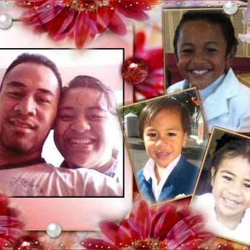
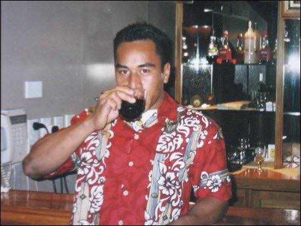

The Journal
of Him
A living archive of the man who never asked to be remembered — and impossible to forget. What follows is a journey, page by page.
He lived in
weather,
Of all the things he was — builder, teacher, quiet comedian — he was first a man who simply showed up, season after season, to be where the day needed him. These are the years that taught the rest.

The Hands That Held Us
Thank you for being our constant anchor, our loudest supporter, and the greatest example of what it means to lead with love, integrity, and strength.
Every sacrifice you made, every lesson you taught, and every laugh we shared has shaped who we are today.
This living archive is our tribute to your life, your heritage, and the priceless moments we carry in our hearts forever.
FIRST
a reel of the years


a few polaroids, kept loose
Memories that didn't ask to be framed, just remembered.



Wisdom Carved in Calm Waters
A Toast to You, Dad!
Fathers of Our Community — Wall of Honor
Upload a photo of your father to join the community wall and celebrate all great fathers!